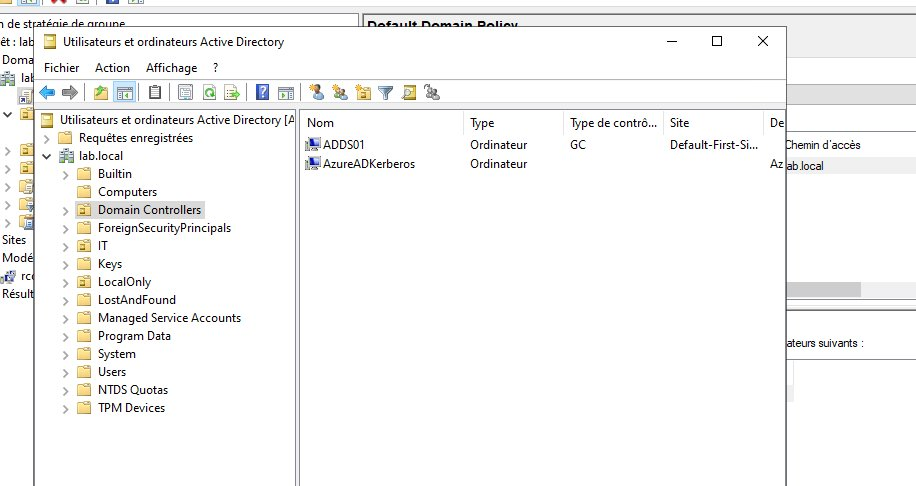
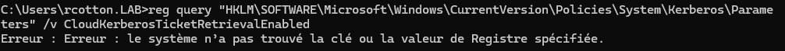
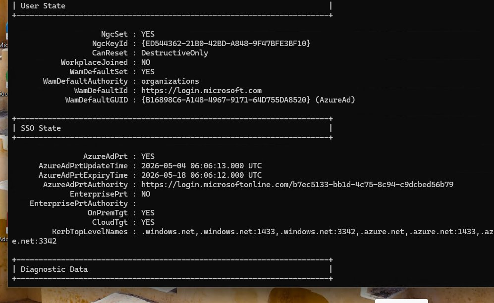
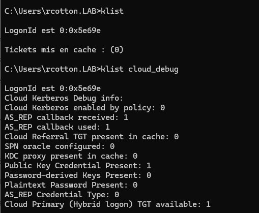
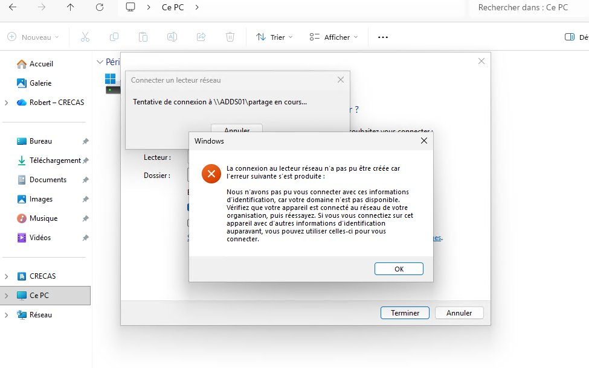

Cloud Kerberos Trust — Accès SMB on-prem depuis PC Entra Joined¶
Permettre à un PC Entra Joined (full cloud, sans AD Join) d'accéder à un partage SMB on-prem en SSO, sans popup de credentials, en s'appuyant sur le mécanisme Cloud Kerberos Trust de Microsoft Entra ID.
Contexte¶
Dans un scénario full cloud, les PC sont Entra Joined mais les ressources fichiers restent on-prem (serveur Windows, Synology...). Sans configuration particulière, Windows ne sait pas s'authentifier en Kerberos AD depuis un PC Entra Joined → popup credentials ou erreur "domaine non disponible".
Le Cloud Kerberos Trust résout ce problème : Entra ID émet un TGT partiel Kerberos qui est échangé contre un TGT complet auprès du DC on-prem, permettant le SSO vers les ressources AD.
Architecture du lab¶
| Rôle | Détail |
|---|---|
| DC | Windows Server 2022, domaine lab.local, IP 192.168.1.10 |
| Serveur de fichiers | Partage \\ADDS01.lab.local\partage joint au domaine |
| PC test | Windows 11, Entra Joined (pas AD), enrollé Intune |
| Tenant Entra | crecas84.onmicrosoft.com |
| Sync | Entra Connect fonctionnel |
Prérequis¶
- DC Windows Server 2016 minimum (2022 recommandé)
- Entra Connect en place et synchronisant les users
- PC Entra Joined enrollé dans Intune
- Compte Global Admin ou Hybrid Identity Administrator sur le tenant
- PowerShell 5.1 sur le DC
PowerShell 5.1 obligatoire
Le module AzureADHybridAuthenticationManagement ne fonctionne pas correctement sous PowerShell 7.
Étape 1 — Installer le module sur le DC¶
Sur le DC, en PowerShell 5.1 en tant qu'administrateur :
Étape 2 — Créer l'objet Kerberos Server dans AD¶
Résultat : un objet AzureADKerberos apparaît dans l'OU Domain Controllers.

Étape 3 — Activer la policy via Intune¶
Dans Intune → Settings Catalog → nouvelle policy :
- Platform : Windows 10 and later
- Paramètre :
Use Cloud Trust For On Prem Auth→ Enabled - Assign : groupe de devices Entra Joined
Alternative GPO
Computer Configuration > Administrative Templates > Windows Components > Windows Hello for Business > Use Cloud Trust For On Prem Auth
Vérification de la clé de registre¶
Malgré un statut "Succeeded" dans Intune, vérifier que la clé est bien écrite :
reg query "HKLM\SOFTWARE\Microsoft\Windows\CurrentVersion\Policies\System\Kerberos\Parameters" /v CloudKerberosTicketRetrievalEnabled
Clé absente malgré policy Succeeded
Problème rencontré en lab : la policy Intune affiche "Succeeded" mais la clé de registre n'est pas créée. Solution temporaire — écrire la clé manuellement :
reg add "HKLM\SOFTWARE\Microsoft\Windows\CurrentVersion\Policies\System\Kerberos\Parameters" /v CloudKerberosTicketRetrievalEnabled /t REG_DWORD /d 1 /f
Puis déconnecter/reconnecter la session.

Étape 4 — Vérifications côté client¶
Après reconnexion de session :
Dans la section SSO State, vérifier :
| Champ | Valeur attendue |
|---|---|
AzureAdPrt |
YES |
OnPremTgt |
YES |
CloudTgt |
YES |

klist doit afficher un ticket krbtgt/LAB.LOCAL avec KDC ADDS01.lab.local.

Étape 5 — Tester le mapping SMB¶
Utiliser le FQDN
Toujours utiliser le FQDN complet (ADDS01.lab.local) et non le nom court (ADDS01). Le PC Entra Joined n'a pas le suffixe DNS lab.local configuré automatiquement.
Points de blocage rencontrés¶
DNS — suffixe lab.local absent¶
Le PC avait lan comme suffixe DNS principal (hérité du DHCP box). nslookup ADDS01 échouait alors que nslookup ADDS01.lab.local 192.168.1.10 fonctionnait.

Solution : toujours utiliser le FQDN, ou déployer le suffixe DNS lab.local via Intune (Settings Catalog → DNS suffixes).
Permissions NTFS insuffisantes¶
Le dossier partagé n'avait pas Utilisateurs du domaine dans les ACL NTFS. Ajouter via PowerShell :
Cloud Kerberos enabled by policy: 0¶
Sur un PC Hybrid Joined, ce champ reste à 0 car le TGT Kerberos AD est obtenu directement — c'est normal. Le Cloud Kerberos Trust n'est actif (1) que sur les PC Entra Joined purs sans lien AD direct.
Rotation de la clé Kerberos¶
À effectuer périodiquement (même fréquence que la rotation krbtgt AD) :
Tip
La propagation de la nouvelle clé entre les KDC peut prendre plusieurs heures. Ne pas tourner plus d'une fois par 24h sans le paramètre -Force.